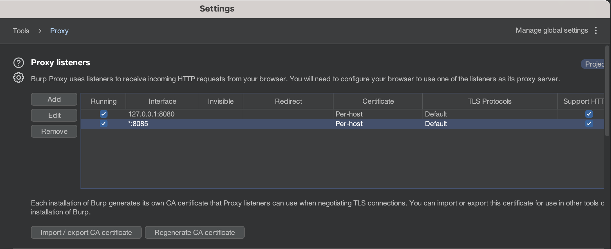
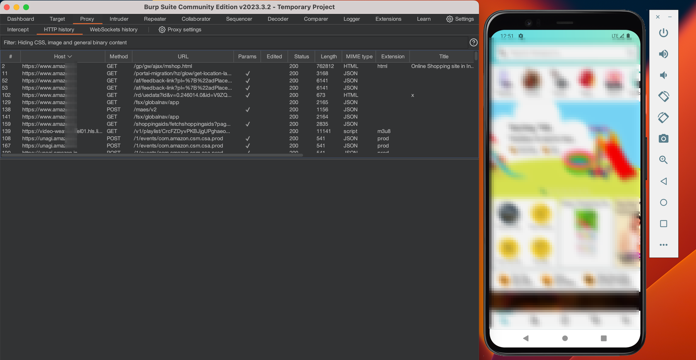

If you have got yourself a Mac to get better at hacking (of course ethically), then you might have already tried setting up an android penetration testing environment in your laptop. Definitely, I agree that this is a tough nut to crack. You might have faced several issues, whether it’s about installing Genymotion or about SSL Pinning bypass. Don’t worry we will cover all the steps to create a setup from scratch. If you’re a beginner, this blog is for you. If you have already started setting up and are still facing issues, this blog is for you. You can catch up with the blog according to the scenario, which is why I have mentioned the blog content and requiements below:
Table of Contents
1) Download & Installation - Android Studio
Yes, we will be using android studio and its emulator (QEMU) for creating an android virtual device (AVD) on which we will test and run our applications. To download the android studio, you can simply go to this official link and fetch out the latest version.
At the time I am writing this blog, the latest version is Android Studio Electric Eel | 2022.1.1 Patch 2. Once the download is completed, install it in your device with the default configurations. It will also ask you to download some required packages, download them too. The whole task will take a couple of minutes to finish.
Now create a new project and follow the below mentioned steps to create an android virtual device:
- Click on
Create Device. - Select a device with Google Play Store in it.
(eg: Pixel 4) - Click on next to download API Level 30 and remember to choose the correct ABI according to your laptop’s architecture.
(eg: arm64/x86) - Once downloaded, select it and give your device a name like
Pixel_4_API_30. - Now your AVD is ready to launch. So do it.
2) Rooting the Android Virtual Device with rootAVD
I hope everything is executed well and fine till now, the AVD is also running properly in your machine. Lets proceed further to root our device with a script known as rootAVD.sh. You can find the github repository link below, just clone it anywhere on your device and enter into the rootAVD/ directory.
Repo Link: https://github.com/newbit1/rootAVD
Follow the Commands:
1) git clone https://github.com/newbit1/rootAVD.git && cd rootAVD
2) chmod +x rootAVD.sh
3) ./rootAVD.sh ListAllAVDs
4) ./rootAVD.sh ~/Library/Android/sdk/system-images/android-30/google_apis_playstore/arm64-v8a/ramdisk.imgNote: Remember to change the architecture in the command no. 4 (x86/arm64).
When the execution is completed, an application called Magisk will be installed on your android device. It means that your device is now successfully rooted. You can also follow the video for your reference:
3) Configuring Burp Proxy with Android Virtual Device
Now let’s configure the proxy with our virtual device to intercept the traffic between application and it’s server. To do so, you first have to download BurpSuite.
Install it with the default configurations and Go to:
Proxy Tab >> Proxy Settings >> Proxy Listeners >> Add
- Bind to port:
8085. - Select
All Interfaces. - Click
OkandYes.

Now once again Go to:
Proxy Tab >> Proxy Settings >> Import/Export CA certificate
- Select
Certificate in DER Format. - Click
Nextand thenSelect File. - Select any folder and enter file name as
burp.cer. - Click
Saveand thenFinish.
Once done, lets move the certificate file into mobile device:
- Open the folder where
burp.ceris saved. - Using drag and drop, move the file into device’s storage.
- Go to mobile settings and open
Securitysection. - Click on
Encryption & Credentialsand thenInstall a certificate. - Select
CA Certificate, chooseburp.cerfrom storage and install it.
Note: Now go to your android device’s wifi settings and edit its configuration by adding the manual proxy. Enter your laptop’s private IP address in the Proxy Hostname (eg: 192.168.10.33) and Proxy Port number as 8085. Click Save and its done :)
4) Importing Modules and Configuring Frida-Server
If you have finished the third step, it’s now time to import few modules and setup the frida-server with your AVD and Mac. Download the below mentioned zip files from GitHub:
When the download gets completed, simply drag and drop both of them into the android device’s storage aka Download folder. Now open Magisk App and click on Modules on the bottom right corner.
- Click on
Install from Storage. - Select
AlwaysTrustUserCerts.zipand reboot. - Again, repeat the same steps for
MagiskFrida-16.0.11-1.zip.
Once the above steps are completed and the device is rebooted successfully, download an application (eg: Amazon) from playstore and let it install. Now open the Magisk App again and click on the Settings icon on the top right corner.
- Enable
ZygiskandEnforce Deny Listmode. - Go to
Configure Denylist. - Checkmark the app and its submodules for to bypass the root detection.

Everything is set now and it’s time to bypass SSL Pinning of the application. Copy and save this frida script as ssl_bypass.js, open terminal and change your directory to where you saved it and run the below commands after that:
1) adb push ssl_bypass.js /data/local/tmp
2) adb ls /data/local/tmp
3) frida -U -f in.amazon.mShop.android.shopping -l ssl_bypass.jsNote: Remember to replace the application package name in.amazon.mShop.android with your application’s package name. If you are having difficulty finding it, go to Magisk App and open the Deny List. You will find them for every installed application.
Running the above commands will cause the application to automatically open in your AVD, and then you can start intercepting traffic in BurpSuite.

5) Bonus Content - Extra Frida Scripts & Alternative Way
Thats it, we have come a long way 😊 !! You can now start your Android/Mobile pentesting journey peacefully. I know some of you might have queries and questions to clarify; don’t worry, you can reach out to me on any of my social media handles and I will be glad to help you.
Though, below mentioned are the few things, which came to my mind and can help you a lot. There might be some applications for which the above frida script will not work, so you can try the below ones:
- Universal Android SSL Pinning Bypass - By pcipolloni
- Frida Android Unpinning - By httptoolkit
- Universal Android SSL Pinning Bypass 2 - By sowdust
Also, if you are looking for an alternative method to set up your android pentest environment, you can study the below mentioned blog:
Thanks for checking out, I hope you find this blog useful and interesting. A big credit to my friends @Utkarsh_Rai and @Nihal_Choudhary for helping me out, let’s catch up in some other super cool blog, MJ :)